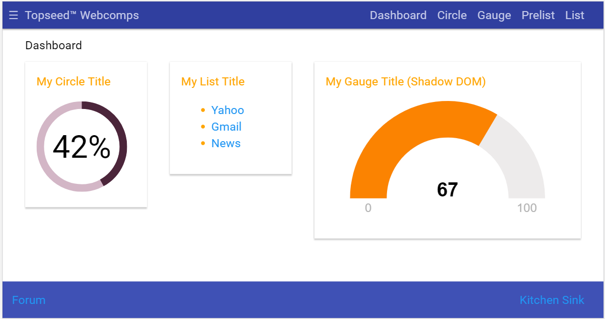

topseed-webcomps
This is a complete "Best Practices" starter project that uses standard web components in a multi-page application. No more "Component already registered" errors. For ulta-rapid page display, all components are late-loaded. Loosely coupled component communication using streams.
Confirmed to work in all major browsers and IE11.

Usage:
To setup and run, follow these instructions, beginning with item 6 (Download and unzip...). This is part of a10-step Web App Best Practices Tutorial. Refer to chapters 1-8 for the concepts applied in this project.
A printed version of the tutorials/Lab Book is available from https://m.appthings.io .
Some best practices demonstrated:
- Apply design guidelines (e.g. Material Design, MUICSS) for beauty and consistency
- Use SASS, BEM and Preprocessors for clean and maintainable CSS
- Use Pug to improve reuse and make your HTML more maintainable (static or node)
- Go max. static; deploy to CDN edge cache to scale for performance
- Use AppShell and page transitions for SPA/rich client feel and SEO
- Use AMP to speed up time-to-glass with viewport rendering and early completion
- Be DOM-centric to be more friendly with team that includes interactive designers that code
- Use PageBusiness, Promises and Fetch(microservice) for cleaner code
- Use Web Component libraries in ways that avoid lock-in
- Use Phonegap/Cordova in-app browser for efficient Mobile apps
Where to go next:
Do the tutorials, and/or contact https://m.appthings.io for commercial support and training.